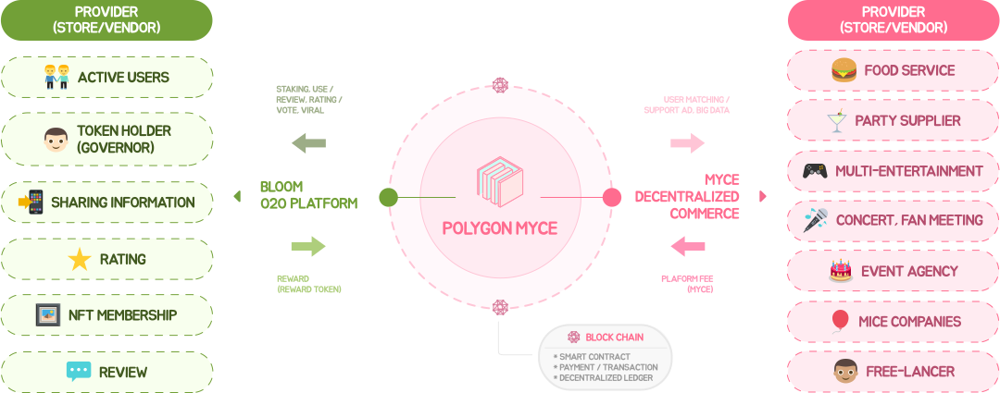

What is MYCE
MYCE는 디지털 가치를 실제 서비스와 교환하겠다는 구매자와 판매자의 약속을
토큰화하여 디지털에서 물리적 상환으로 자동화할 수 있도록 지원합니다.

Key Feature of MYCE

온라인 상거래
신뢰를 기반으로 하여 최소의 비용으로 무엇이든 제공, 검색 및 교환할 수 있는 열린 디지털 마켓 플레이스를 제공합니다.
가상자산의 거래
토큰이 거래소를 거치지 않고 실제 보상을 받을 수 있도록 하고
수수료 경쟁보다는 보상으로 차별화하여 토큰 가치를 높입니다.

토큰화된 네트워크
사용자가 인식하는 가치와 토큰의 실제 가치를 높이기 위해 네트워크 상의 토큰을 상품 또는 서비스로 교환할 수 있게 합니다.
로열티 및 보상
로열티 프로그램 및 보상이 표준화되어 상호 운용 가능한 디지털 형식으로 되어
중개 비용이나 충돌 없이 상품을 제공할 수 있도록 지원합니다.

서비스의 신뢰성과 투명성
MYCE 거버넌스는 사람과 사물(오프라인 기반 서비스 또는 객체)뿐만 아니라 사람과 모임(또는 지역) 커뮤니티를 연결하여 개인의 요구를 충족하고
커뮤니티 효율성을 향상시키는 새로운 프로세스를 설계했습니다.
